Membuka jalan sukses, SMK Turah 01 Bogor menjadi lembaga pilihan tepat yang siap membimbing siswa bernalar kritis, kreatif, dan profesional di industri digital.
80%
Tingkat Penempatan Kerja & Alumni Sukses
Selamat datang di SMK Turah 01 Bogor — sekolah menengah kejuruan yang berkomitmen mencetak generasi muda berkarakter, kompeten, dan siap bersaing di era industri digital. Kami percaya bahwa pendidikan bukan hanya soal nilai akademik, tetapi juga tentang bagaimana setiap siswa tumbuh menjadi pribadi yang tangguh, kreatif, dan berintegritas tinggi. Di sini, setiap siswa dibimbing oleh tenaga pengajar profesional, didukung fasilitas laboratorium modern, serta dilibatkan langsung dalam program magang bersama perusahaan mitra industri. Kami membangun lingkungan belajar yang aman, nyaman, dan menyenangkan, sehingga setiap siswa dapat mengeksplorasi minat dan bakatnya tanpa batas. Melalui kurikulum berbasis industri, kegiatan ekstrakurikuler yang beragam, serta pembinaan karakter yang berkelanjutan, kami siap mengantarkan setiap anak menuju masa depan yang gemilang dan penuh peluang. Mari bersama-sama kita wujudkan impian, raih prestasi, dan bangun masa depan yang lebih cerah di SMK Turah 01 Bogor.
Muhamad Fatur Rahman, S.Pd., M.M.
SMK Turah 01 Bogor adalah sekolah menengah kejuruan yang berdiri sejak tahun 2010 dan berfokus pada pendidikan teknologi digital serta industri kreatif. Berlokasi di Jl. Setiabudi No.32, Sindangbarang, Bogor Barat, sekolah ini hadir sebagai jawaban atas tingginya kebutuhan tenaga kerja profesional di era digital. Untuk mendukung proses pembelajaran, tersedia berbagai fasilitas modern — mulai dari laboratorium komputer berstandar industri, studio DKV & podcast, perpustakaan digital, musholla, lapangan olahraga serbaguna, kantin sehat, ruang UKS, hingga area WiFi gratis di seluruh lingkungan kampus. Kurikulum yang diterapkan memadukan standar nasional dengan kebutuhan industri, diperkuat kemitraan bersama berbagai perusahaan teknologi dan industri kreatif untuk program magang, kunjungan industri, hingga penyaluran kerja lulusan. Dengan pendekatan ini, lebih dari 80% alumni terserap langsung di dunia kerja maupun melanjutkan pendidikan ke jenjang yang lebih tinggi.
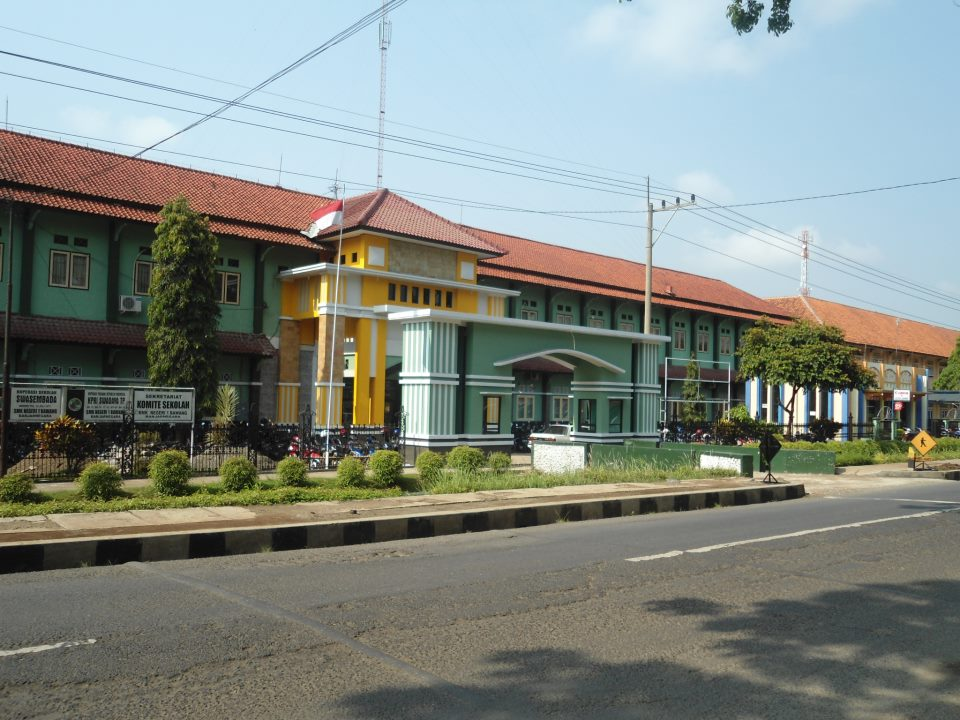
Kenapa Pilih Kami
Alasan SMK Turah 01 Bogor menjadi pilihan tepat untuk masa depanmu
Fasilitas Lab Modern
Laboratorium komputer, studio DKV & podcast berstandar industri untuk praktik langsung.
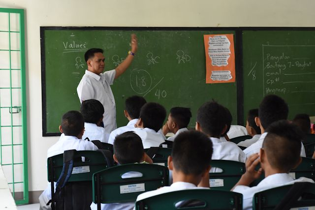
Guru Berpengalaman
Diajar oleh tenaga pengajar profesional dan kompeten di bidangnya masing-masing.
Kerja Sama Industri
Kemitraan luas dengan dunia usaha dan industri untuk peluang magang dan kerja.
Profil Sekolah: Peluang Terbaik untuk Mengubah Mimpi.
Berdiri sejak 2010, SMK Turah 01 Bogor berkomitmen tinggi memberikan pendidikan kejuruan berkualitas tinggi dengan fasilitas lab modern dan kerja sama erat bersama industri.
30%
Praktik Industri Nyata
95%
Langsung Kerja / Kuliah
Visi & Misi
Visi
"Menjadi sekolah menengah kejuruan unggulan yang menghasilkan lulusan berkarakter, kompeten di bidang teknologi digital, serta berdaya saing global pada tahun 2030."
Misi
Menyelenggarakan pembelajaran berbasis industri yang relevan dengan perkembangan teknologi terkini.
Membentuk karakter siswa yang berintegritas, disiplin, berwawasan lingkungan, dan berjiwa kewirausahaan.
Memperluas jejaring kemitraan dengan Dunia Usaha dan Dunia Industri (DUDI) untuk optimalisasi penyaluran kerja dan praktik lapangan.
Menyediakan fasilitas pendukung pembelajaran bernuansa modern guna mendukung kreativitas dan inovasi peserta didik.
Sekilas Sejarah SMK Turah 01 Bogor
SMK Turah 01 Bogor didirikan sebagai langkah nyata dalam menjawab tantangan era digitalisasi dan tingginya permintaan tenaga kerja profesional di bidang teknologi serta industri kreatif. Berawal dari sebuah gagasan sederhana untuk menyediakan pendidikan kejuruan yang relevan dengan perkembangan zaman, sekolah ini kini telah berkembang menjadi salah satu SMK pusat keunggulan di Kota Bogor.
Sejak awal berdiri, SMK Turah 01 Bogor berkomitmen memadukan kurikulum nasional dengan standar industri modern. Dengan dukungan tenaga pengajar profesional dan fasilitas laboratorium berteknologi tinggi, sekolah ini terus mencetak lulusan yang inovatif, berkarakter kuat, dan siap bersaing di pasar kerja global.
Jejak Langkah Kami
2010
Dibangun & Berdiri
Resmi beroperasi dengan jurusan awal Teknik Komputer & Jaringan (TKJ).
2013
Ekspansi Program Keahlian
Membuka jurusan RPL dan DKV untuk memenuhi kebutuhan industri perangkat lunak & desain.
2016
Pembangunan Modern Campus
Peresmian gedung utama serta laboratorium komputer berstandar industri.
2019
Peluncuran Jurusan PSPT
Menambahkan jurusan Produksi & Siaran Program Televisi serta memperluas jaringan magang industri.
2022
Predikat Sekolah Unggulan
Meraih akreditasi A dan menjadi SMK pusat binaan teknologi digital di Kota Bogor.
Kepala Sekolah
Pimpinan yang membimbing arah dan visi SMK Turah 01 Bogor
Dewan Guru & Staff
Dididik dan dibimbing oleh tenaga pengajar profesional dan berpengalaman di bidangnya
Berita Terkini
Informasi seputar kegiatan dan agenda penting sekolah
Prestasi
Capaian membanggakan siswa-siswi dan sekolah dalam berbagai bidang
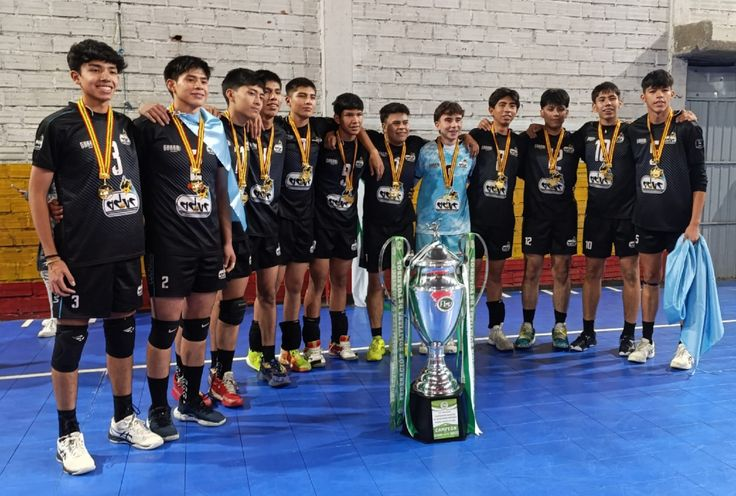
Juara 1
Turnamen Futsal Kota Bogor
Tim futsal SMK Turah 01 berhasil menyabet juara 1 pada turnamen tingkat Kota Bogor tahun 2025.
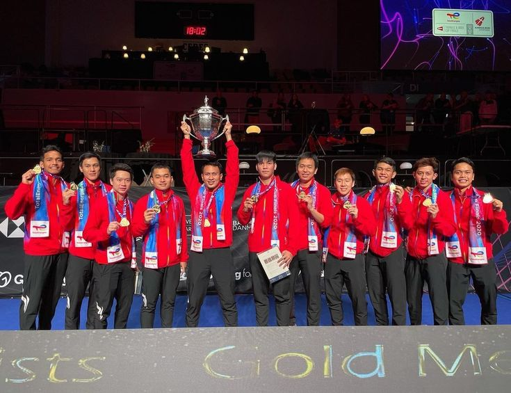
Juara 1
Badminton Kota Bogor
Atlet badminton SMK Turah 01 meraih juara 1 pada kejuaraan badminton tingkat Kota Bogor.
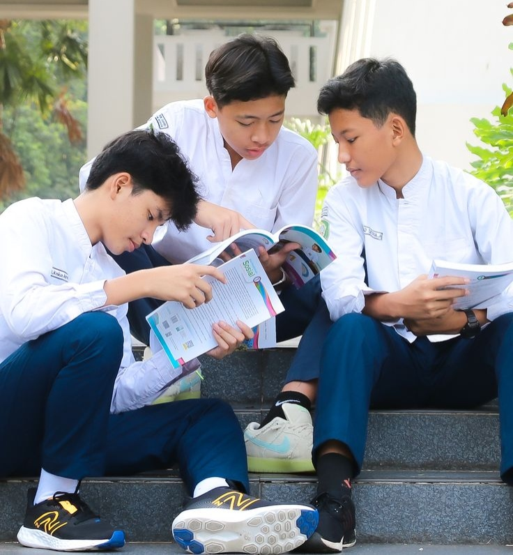
Penghargaan
Siswa Aktif Pertama di Kota Bogor
Dikenal sebagai siswa aktif pertama di Kota Bogor atas dedikasi dan prestasi yang membanggakan.
Juara 2
Kompetisi Robotik Provinsi
Tim robotik SMK Turah 01 berhasil meraih juara 2 pada kompetisi robotik tingkat Provinsi Jawa Barat 2025.
Juara 1
Lomba Desain Poster Nasional
Siswa jurusan DKV menorehkan prestasi juara 1 pada lomba desain poster tingkat nasional tahun 2025.
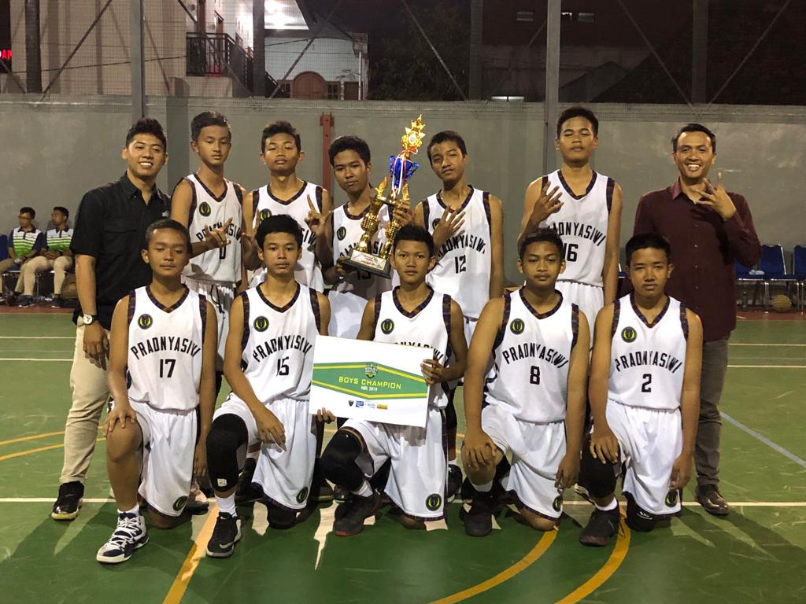
Juara 3
Turnamen Basket Antar-SMK
Tim basket SMK Turah 01 meraih juara 3 pada turnamen basket antar-SMK se-Kota Bogor 2025.
Daftar Jurusan Keahlian
Didesain khusus untuk meningkatkan kompetensi dan kesiapan kerja di dunia industri modern.
Dari daftar di atas, SMK Turah 01 Bogor memiliki
0 program keahlian yang dirancang khusus
untuk menyiapkanmu menjadi tenaga profesional siap kerja di dunia industri modern.
Setiap jurusan dilengkapi kurikulum berbasis industri, fasilitas laboratorium
berstandar, serta program magang bersama perusahaan mitra. Kamu bebas memilih
jurusan sesuai minat dan bakatmu — dan kami siap membimbingmu sampai siap
bersaing di dunia kerja global.
Kegiatan Ekstrakurikuler
Wadah mengasah bakat, kepemimpinan, dan minat siswa di luar kegiatan akademik.
Dari daftar di atas, tersedia 0 kegiatan
ekstrakurikuler sebagai wadah mengasah bakat, minat, dan kepemimpinanmu
di luar jam pelajaran akademik. Setiap ekskul dibimbing oleh pembina
profesional yang siap membantumu berkembang — mulai dari bidang seni,
olahraga, kepramukaan, hingga keagamaan. Pilih ekskul yang paling sesuai
dengan passion-mu, dan jadikan masa sekolahmu lebih berwarna!
Galeri Kampus & Kegiatan
Dokumentasi aktivitas belajar mengajar serta fasilitas penunjang sekolah
01
Fasilitas Kampus
Berbagai sarana modern untuk mendukung pembelajaran
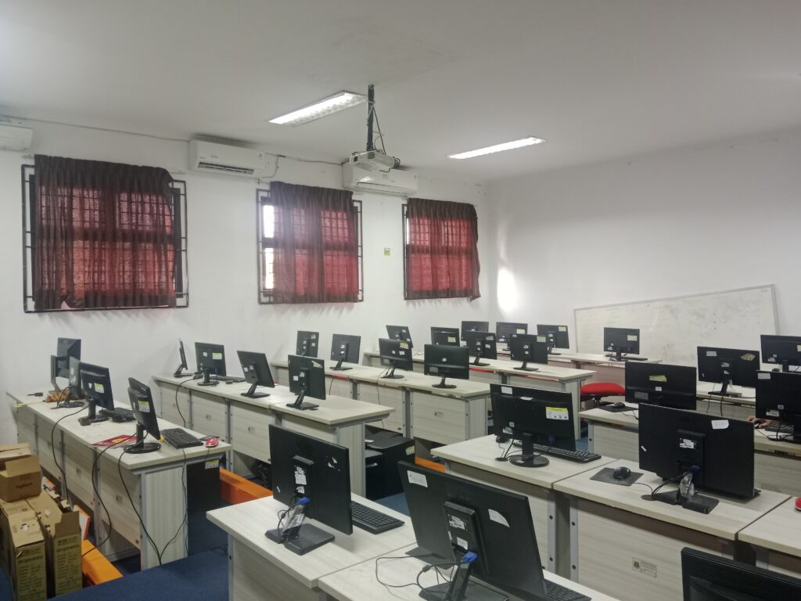
Laboratorium
Laboratorium Komputer
Lab modern untuk praktikum jaringan & pemrograman siswa-siswi.
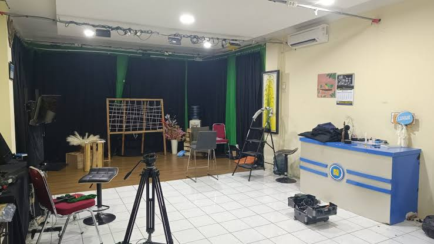
Studio
Studio DKV & Podcast
Fasilitas multimedia lengkap.
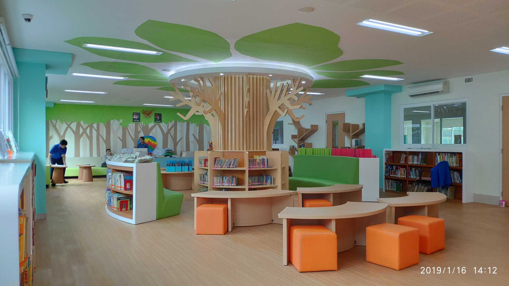
Literasi
Perpustakaan
Ruang baca nyaman & koleksi lengkap.
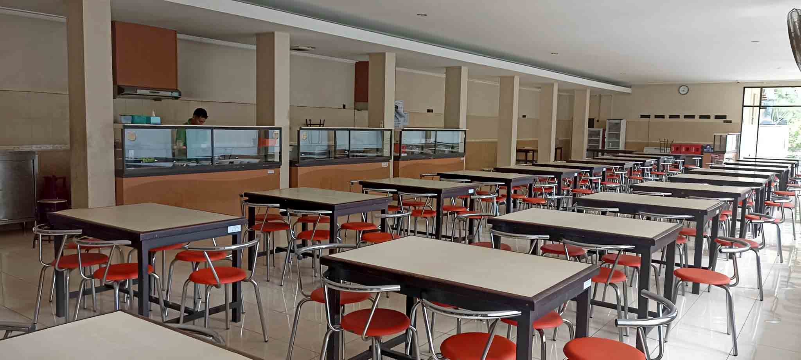
Kantin
Kantin Sekolah
Tempat favorit siswa untuk istirahat & makan bersama.
02
Kegiatan Akademik & Praktik
Momen pembelajaran hingga pengalaman di dunia industri
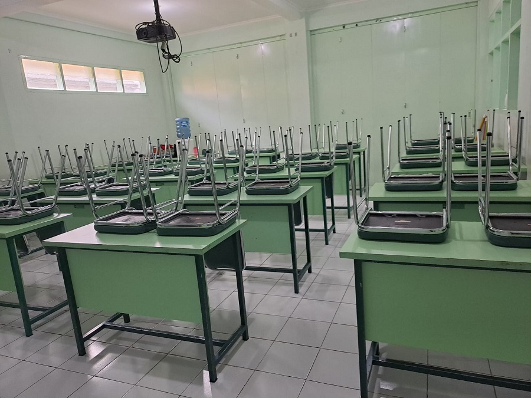
Kelas
Suasana Kelas
Pembelajaran interaktif bersama guru profesional di ruang kelas modern.
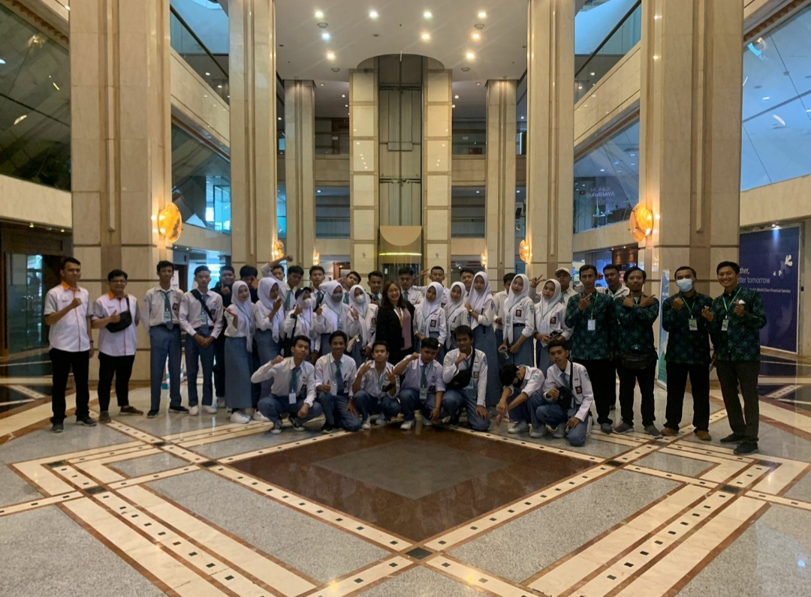
Kunjungan
Kunjungan Industri
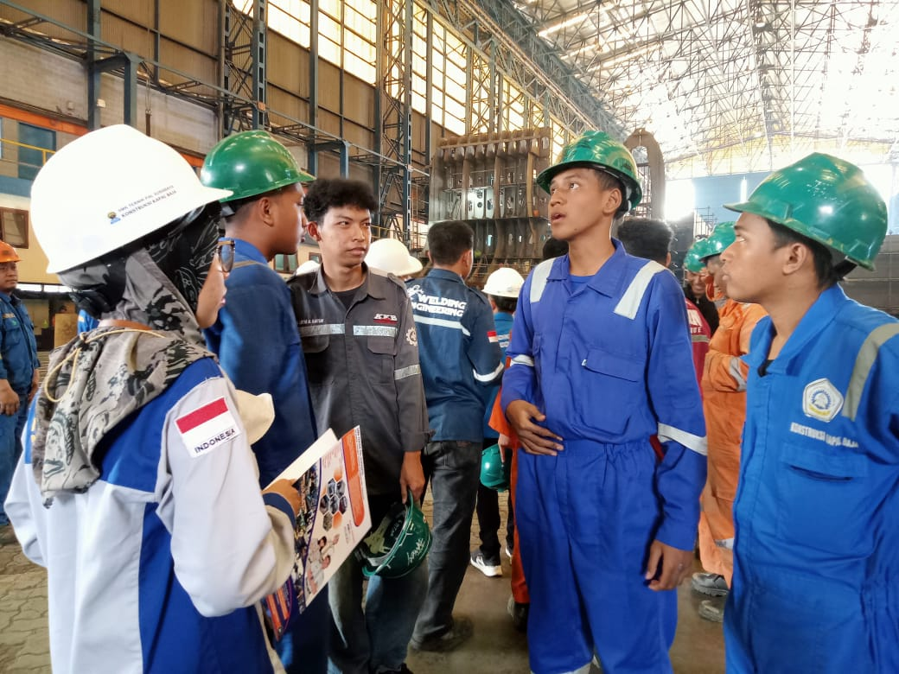
PKL
Praktik Kerja Lapangan
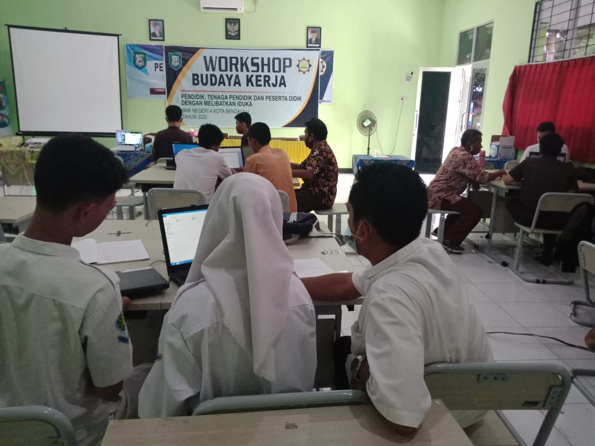
Workshop
Workshop & Pelatihan
03
Kegiatan Sekolah & Keagamaan
Rutinitas, acara, dan momen berharga yang membentuk karakter
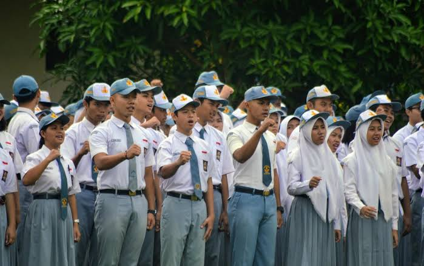
Upacara
01
Upacara Bendera
Setiap Senin pagi, seluruh siswa-siswi mengikuti upacara bendera untuk menumbuhkan rasa cinta tanah air, kedisiplinan, dan jiwa nasionalisme.
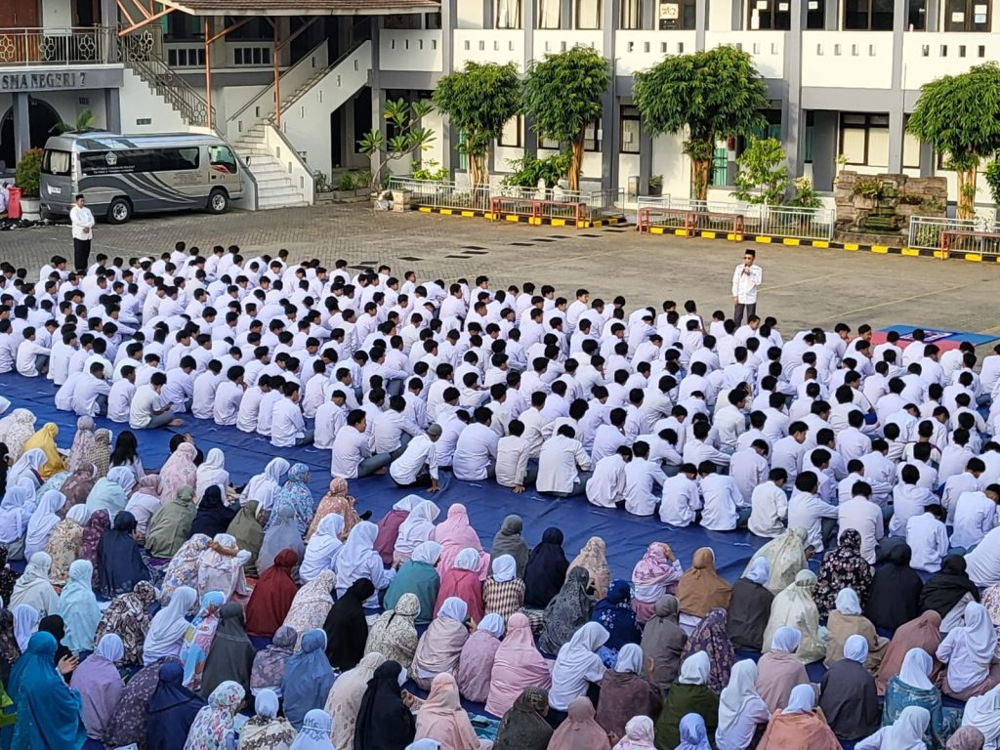
Religius
02
Sholat Dhuha Bersama
Kegiatan rutin sholat Dhuha berjamaah di musholla sekolah, sebagai wujud pembinaan karakter religius dan penguatan spiritual siswa.
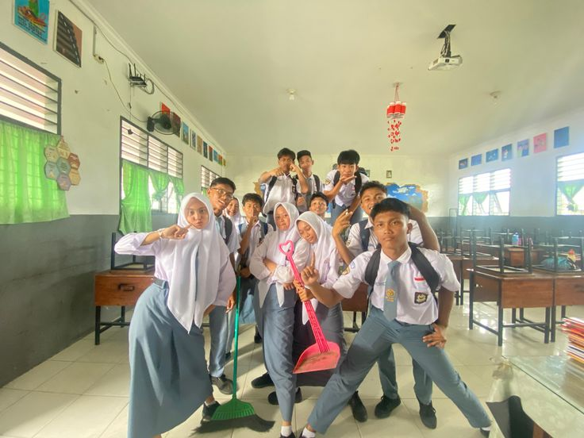
Kebersihan
03
Piket Kelas
Siswa-siswi bergiliran membersihkan ruang kelas setiap hari, sebagai wujud pembinaan tanggung jawab dan kepedulian terhadap lingkungan belajar.
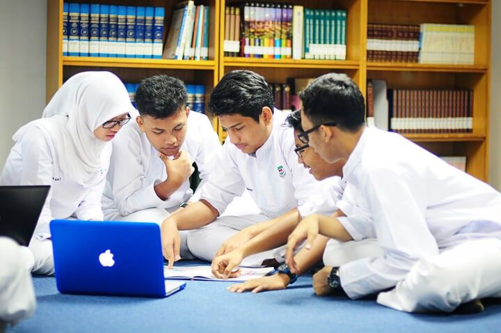
Literasi
04
Literasi Pagi
Setiap pagi sebelum KBM dimulai, siswa-siswi membaca buku selama 15 menit untuk menumbuhkan minat baca dan memperluas wawasan.
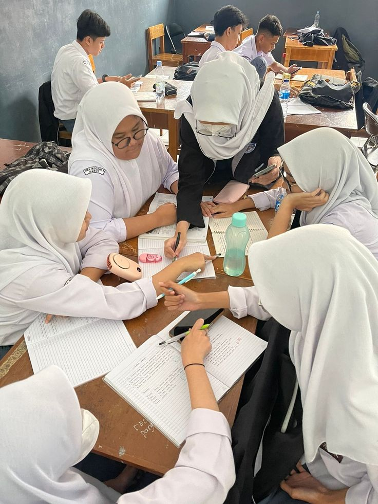
KBM
05
Kegiatan Belajar Mengajar
Proses pembelajaran interaktif di kelas bersama guru profesional, mulai dari teori hingga praktik langsung sesuai jurusan masing-masing siswa.
Ulasan & Testimoni
Bagikan pengalamanmu tentang SMK Turah 01 Bogor
0.0
Rating KeseluruhanBelum ada ulasan
Kirim Ulasanmu
Ulasan Terbaru
PPDB 2026 Dibuka
Daftar Sekarang
Isi data di bawah ini, tim kami akan menghubungimu dalam 1×24 jam.
Pendaftaran Terkirim!
Terima kasih, Siswa! Kami akan menghubungimu lewat WhatsApp dalam 1×24 jam. 🎉